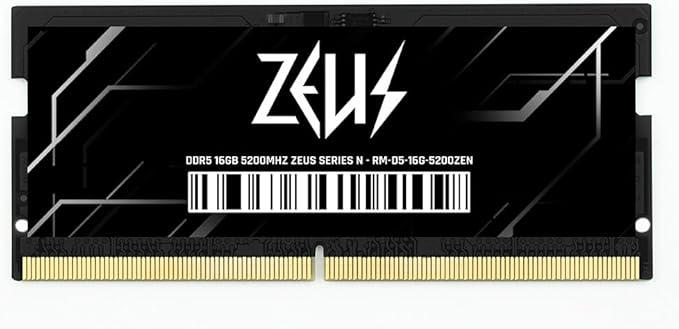

Resposta curta do guia: em 2026, colocar SSD no PS5 continua valendo a pena para quem compra jogos digitais, assina serviços, alterna títulos grandes com frequência ou simplesmente quer menos fricção para gerenciar espaço. O upgrade deixa de ser “luxo” quando a biblioteca cresce.
Por que esse assunto continua relevante
O SSD interno do PS5 é rápido, mas o espaço útil se esgota cedo quando o usuário mantém jogos AAA, atualizações, capturas e múltiplos títulos instalados ao mesmo tempo. Em 2026, esse problema segue atual porque os jogos continuam pesados, e a rotina do jogador ficou mais híbrida: campanha, multiplayer, testes de lançamento, patches constantes e catálogos rotativos.
Quem joga só um ou dois títulos por vez pode conviver melhor com o armazenamento original. Já quem alterna entre franquias grandes, experimenta lançamentos e aproveita promoções digitais costuma sentir o limite com rapidez. Nessa situação, o SSD extra melhora a experiência menos pelo “tempo de carregamento” e mais pela liberdade de manter a biblioteca pronta.

Menos gestão, mais jogo
O ganho prático está em parar de apagar e baixar títulos a todo momento para abrir espaço.

Pensar no ecossistema
Assim como em um PC, armazenamento é parte da sensação de conforto do uso diário.
Quando o upgrade compensa de verdade
- Biblioteca digital grande: se você mantém muitos jogos instalados, o SSD extra reduz atrito imediatamente.
- Uso frequente de jogos pesados: títulos grandes, atualizações e DLCs ocupam muito espaço.
- Catálogo rotativo: quem assina serviços ou compra em promoções usa mais armazenamento do que imagina.
- Família ou console compartilhado: mais de um jogador no mesmo aparelho muda completamente a necessidade de espaço.
Capacidade, dissipação e compatibilidade: o trio que importa
Não basta comprar qualquer SSD com nome famoso. Em um console, a compra precisa respeitar compatibilidade física, dissipação adequada e desempenho consistente. O usuário que pesquisa só a velocidade máxima estampada na embalagem corre o risco de pagar a mais por algo que não muda sua rotina na mesma proporção. Por outro lado, um modelo muito básico pode gerar frustração ou limitações na instalação.
Capacidade também pesa bastante. Um SSD pequeno demais alivia o problema só por um curto período. Já um modelo com espaço mais folgado tende a ser o ponto de equilíbrio, porque evita um novo upgrade cedo demais e permite manter campanhas longas, jogos multiplayer e favoritos do momento sem microgerenciamento.
O que muda no dia a dia depois do upgrade
Menos downloads repetidos
O ganho mais percebido é deixar de apagar jogo para reinstalar depois. Em conexões medianas, isso já justifica o investimento.
Biblioteca mais organizada
Ter espaço ajuda a manter títulos separados por uso: multiplayer, campanha, coop e backlog.
Uso mais confortável do console
O PS5 passa a funcionar com menos atrito, principalmente para quem alterna entre muitos jogos por semana.
Quando talvez não valha a pena
Se o seu padrão é muito enxuto, com um ou dois jogos fixos e pouca compra digital, o retorno pode ser pequeno. Também faz menos sentido para quem está perto de trocar de geração, usa o console raramente ou prioriza outros upgrades do setup, como headset, monitor e internet. Em resumo: o SSD é excelente quando resolve uma dor real; não precisa ser compra automática só porque “todo mundo recomenda”.
Como decidir sem arrependimento
| Cenário | Vale a pena? | Motivo principal |
|---|---|---|
| Jogador digital com biblioteca grande | Sim, fortemente | Reduz gestão de espaço e reinstalações constantes. |
| Usuário casual com poucos jogos instalados | Talvez não agora | O SSD original pode atender por mais tempo. |
| Console compartilhado por duas ou mais pessoas | Sim | O espaço extra evita conflito entre perfis e downloads. |
| Foco total em custo mínimo | Depende | Talvez seja melhor esperar promoção ou subir de capacidade de uma vez só. |
Veredito TechNetGame
SSD para PS5 continua valendo a pena em 2026 quando o upgrade resolve um problema concreto de espaço e conforto de uso. Para quem compra digital, instala jogos grandes e alterna títulos com frequência, o benefício é claro. Para quem joga pouco e mantém uma biblioteca enxuta, o upgrade pode esperar. A chave está em comprar o SSD pelo impacto na rotina, não pela ansiedade de ter “o acessório obrigatório”.
Para continuar o planejamento do setup, veja também melhores notebooks gamer 2026, comparações essenciais e hub de hardware.